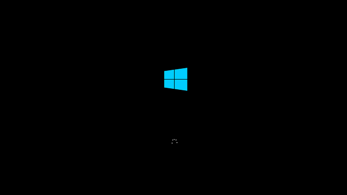

Instalación Windows Server
Se inicia el instalador de Windows Server 2016.

Comienza la preparación de dispositivos de la computadora.
Windows Server carga los archivos esenciales para la instalación.
El asistente de instalación de Windows Server arranca. Nos pedirá ingresar idioma, formato de hora y moneda, y formato del teclado.
Damos clic en "Siguiente".

Seleccionaremos que sistema operativo que queremos instalar y damos clic en “Siguiente”.
Seleccionamos la particionado donde queremos que se instale nuestro Sistema Operativo y damos clic en “Siguiente”.
Arranca la instalación de Windows Server en el disco seleccionado.
Se reiniciará la computadora para iniciar los servicios para primer inicio de sesión.
Windows Server 2016 Iniciado.
Nos vamos a propiedades del sistema y verificamos que la instalación fue todo un éxito.